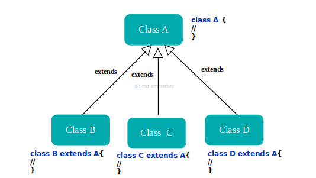

Object
Java, Inheritance is an important pillar of OOP(Object-Oriented Programming). It is the mechanism in Java by
which one class is allowed to inherit the features(fields and methods) of another class. In Java, Inheritance
means creating new classes based on existing ones. A class that inherits from another class can reuse the
methods and fields of that class. In addition, you can add new fields and methods to your current class as well.
Why Do We Need Java Inheritance?
Code Reusability: The code written in the Superclass is common to all
subclasses. Child classes can directly use
the parent class code.
Method Overriding: Method Overriding is achievable only through
Inheritance. It is one of the ways by which Java
achieves Run Time Polymorphism.
Abstraction: The concept of abstract where we do not have to provide
all details is achieved through
inheritance. Abstraction only shows the functionality to the user.
Important Terminologies Used in Java Inheritance :
Class: A class is a group of objects which have common properties. It is a template or blueprint from which
objects are created.
Sub Class/Child Class: Subclass is a class which inherits the other class. It is also called a derived
class, extended class, or child class.
Super Class/Parent Class: Superclass is the class from where a subclass inherits the features. It is also
called a base class or a parent class.
Reusability: As the name specifies, reusability is a mechanism which facilitates you to reuse the fields and
methods of the existing class when you create a new class. You can use the same fields and methods already
defined in the previous class.
